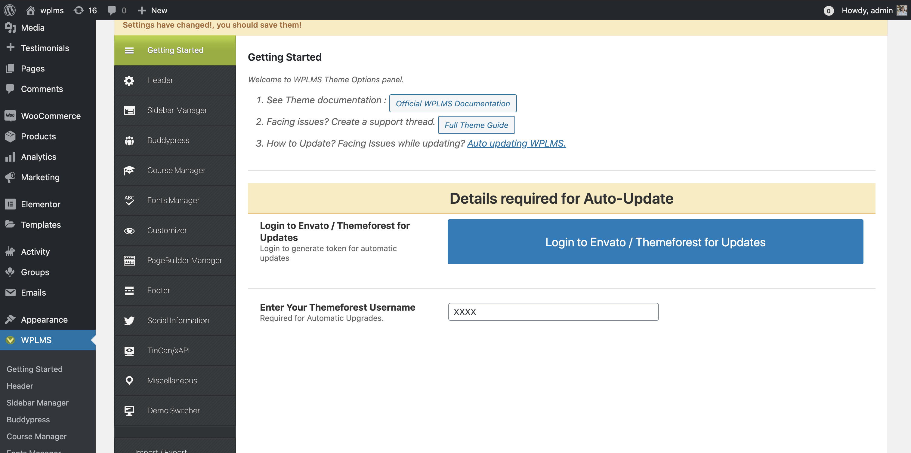
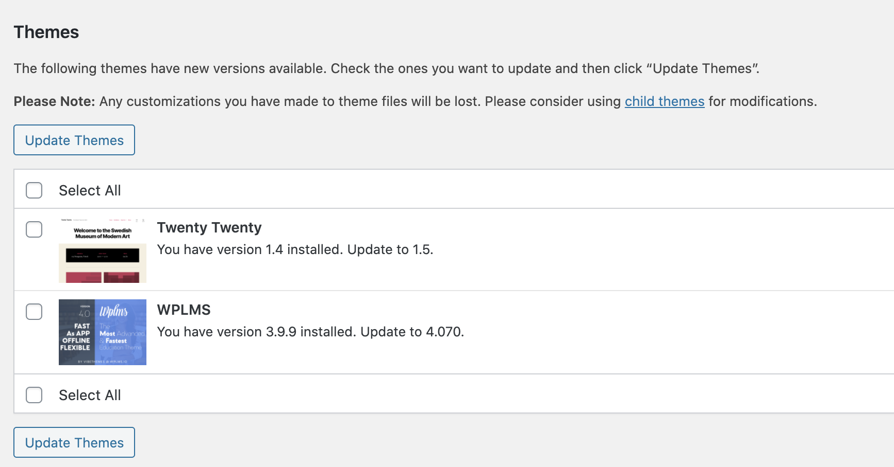
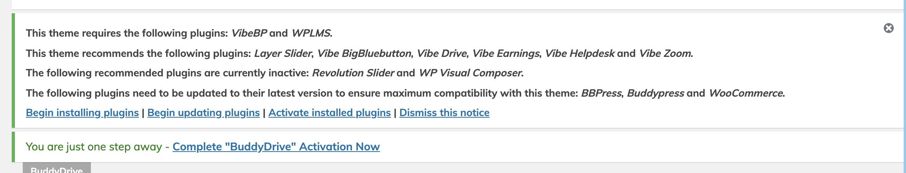
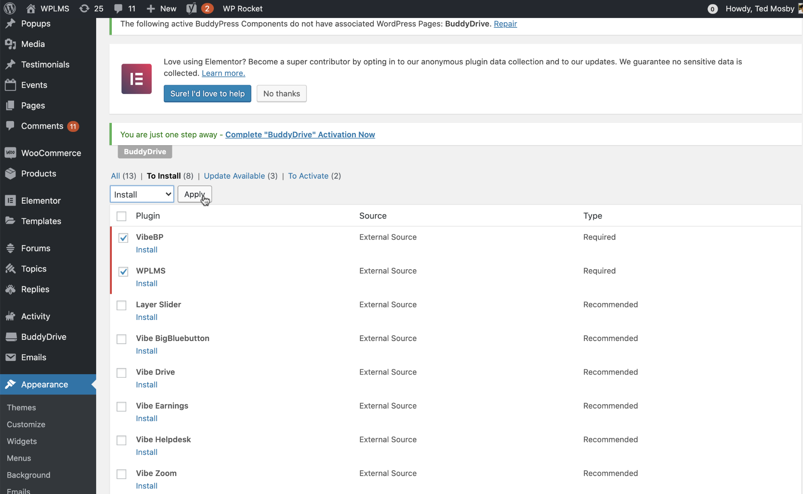
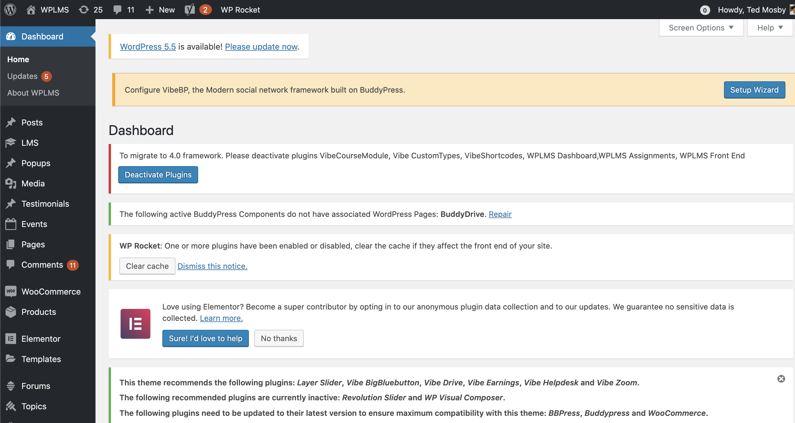
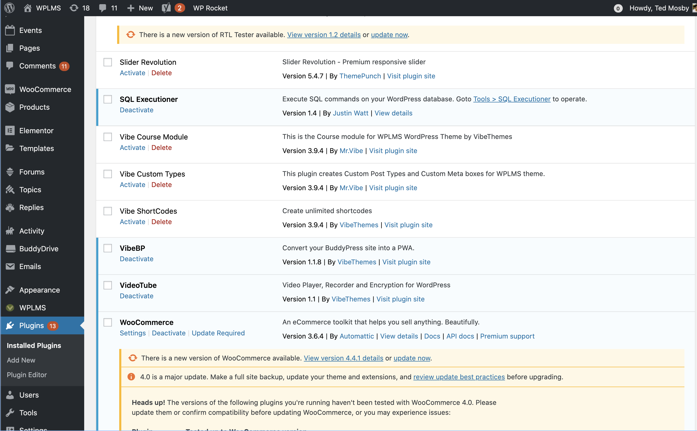
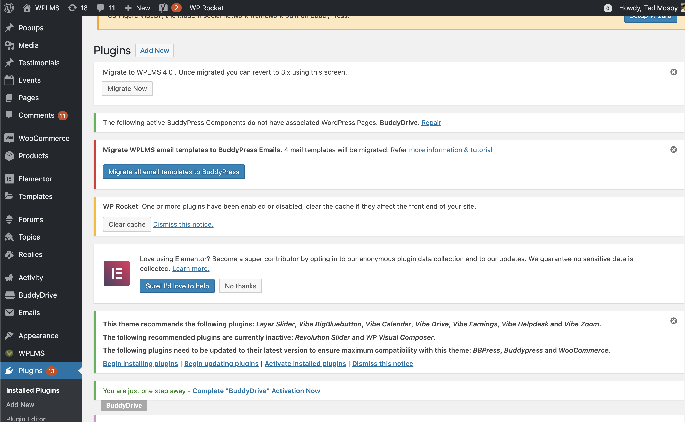

Installation
WPLMS version 4.
- Installing on a fresh WordPress Setup
- Installing on a existing WordPress site
- Upgrading from 3.x version
Upgrading from a 3.x or an older WPLMS Version.
The WPLMS has changed a lot in verison 4.0. Consider WPLMS 4.0 a complete rewrite in terms of User experience, UI and technology.
If you understand how internet evolves you'll understand that this change was an absolute necessity. We do realise we can't please everyone, even the best of the ideals fail at this.
Why 4.0 ? A Scalable & Blazing fast LMS & Community site, which can be ported into a mobile app. A single App for Students, Instructors, Sellers, Administrators, Staff, Companies, Managers, Chairman and any other user. App which runs on Mobile, Tablet and Desktop and looks equally good.
4.0 works on a simple concept : Use more browser than the server. In short it will save you on your server expenses.
The 2020 is predicted is an year of Speed. The dynamics of the web has changed. There are more important terms which are missed in WordPress optimisation. A faster loading site is the best UX !
What has changed in the WPLMS 4.0 ?
There are a lof of changes in the WPLMS 4.0 framework. But to summarize here's a list of big impact changes.
WPLMS no longer uses WordPress login system. The WordPress login system is a cookie based authentication which verified by database sessions. The WPLMS 4.x series uses a JWT based authentication. Unlike default WordPress implementation where you'll notice a drop in server performance as the number of logged in users increased, the JWT makes sure the server performance remains same.Learn more. Any third party plugin which relied on WordPress login, would no longer work. The logins are now triggered by the browser so the server renderes a static page and javascript detects if the user is logged in to the site and then logs the user in. You may be able to observe this on page reloads at the login screen.
Merging of Core Plugins
The core plugins Vibe Course Module, Vibe Customtypes, Vibe Shortcodes, WPLMS Dashboards, WPLMS FrontEnd, WPLMS Assignments are all merged into 1 single plugin "WPLMS Plugin" [screenshot]. The WPLMS Plugin requires VibeBP plugin which is the web app framework for BuddyPress.
No jQuery & Cache ReadyThe jQuery dependency has been removed. All javascript is written in plain core javascript or in ReactJS. The benefit is that it can be easily loaded in defer mode. Which has a big impact on page load speed.
Page Builders for Profile/Course/Group/Directories LayoutsTo create a flexible layouts and add custom information, we needed to use a flexible system for creating Course styles, profile styles and more. In 3.x or below we were using hard coded templates for creating designs for profiles, directories, courses in 4.x series we have Page builders doing this. You can create unlimited layouts and set layouts on per element basis as well. Currently Elementor is supported but all content is built using shortcodes, so we can integrated with your favorite page builder in future.
No more tabsThe Profile Tabs are gone. The Course tabs are gone. Elements which relied on server to generate dynamic content (per course, per members) are removed. Because these pages are dynamically generated for each member, the servers can not cache these pages as static. All this information exist in the members area.
No Course Status, No Create Course PageTwo core settings are no longer required. The users now create and manage courses from their Profile area. As the profile area would be converted into the Web/Mobile App, this provides users a consistent experience accross mobile and web.
New Members AreaThe members area which loads in the profile when you are logged in to the new WPLMS (VibeBP). It is a fully customisable area and using menus and dashboards you can load different menu items, different widgets based on user role/capabilities.
Menus & OrganisationThe Profile navigation is now managed from WordPress Menus. No longer need any code or third party plugin.
No Public Activity directoryWe feel that activities is one of the most important part of WPLMS and any community site. WPLMS uses activities for generating reports and tracking a lot of information. Making this sensitive information public is a huge drawback. So, only the administrator can load the site wide activity in his members area.
Trimming and Extending BuddyPressBuddyPress is "The" best membership plugin in the world. However, we felt that in some cases it went overboard in UX and in some cases it lacked. Based on our study we came out with the best possible case which can be used for education sites without any compromise on Speed. These are most notably : Static profiles for Public, Attachments in Activity, Improved Messaging, a Followers component, improved groups component and dynamic directories .
Using Social Logins & RealTime Communication via FirebaseThere is no realtime communication inbuilt into WordPress or BuddyPress. The 4.x series comes with optional inbuilt firebase integration for Live chat, RealTime Communication and Social Logins. So,if student is online and an Instructor adds the student in a course, he gets a real time notification. In future upgrades we'll be using firebase for background sync, push notifications and machine learning implementations as well.
Updating the theme
To update the theme, you need an Envato / Themeforest account and a valid purchase.
Although having an active support is not required, we certainly recommend users to ensure their support is active. You can use this link to verify if your Support is still active.
You can also use WPLMS v4 theme with v3.9 plugins.
Authenticating Update
To Update the WPLMS theme, just go to WP admin - WPLMS (options panel) - Getting started section. Click on the large Authenticate button. If you see Re-Authenticate then also we recommend you to click on it Authenticate your purchase from Envato. You do not require active support to update the theme
Update the Theme
Go to WP admin - Updates section. If you do not see update for the theme in theme updates section. Click on check again.
Select and update the theme.
Setting Up Plugins
On activating the verison 4 of the theme. you will land on the about page of the theme.
Click on the big red button in the WPLMS About section. You'll not be able to install any WPLMS v4 plugins without entering the purchase code in the big red button. All plugins in WP admin - Appearance - Install Plugins will show failed to install message in the next step. [screenshot]

On clicking the big red button you will land on the Setup Wizard - Configure updates screen. Enter your item purchase code there and submit the form. Post submit you will see the link to go back to the About WPLMS screen.
Installing Plugins
To install the required and recommended plugins simply click on the notification in your WP admin screen.
You can now install the plugins from the install plugin notice.
Installing the plugins would activate the WPLMS v4 in your site.
This notice will appear on upgrading theme to version 4
Clicking on install plugins you will land on the install plugins screen. You can then install the plugins.
If you missed out on the step to authenticate in the WPLMS About section you will not be able to install the plugins here.
Another case when plugins may not get installed is because of network connectivity. Your server unable to connect with Amazon server for plugin downloads.
In case you see failed error messages, you can follow these direct links for plugin downloads for required plugins :
- BuddyPress : Download link
- WPLMS : https://wplms.io/verify-purchase/?purchase_code=XXX&plugin=wplms.io/wplms_plugin.zip
- VibeBP : https://wplms.io/verify-purchase/?purchase_code=XXX&plugin=wplms.io/vibebp.zip
- Vibe-Helpdesk : https://wplms.io/verify-purchase/?purchase_code=XXX&plugin=wplms.io/vibe-helpdesk.zip
- Vibe Drive : https://wplms.io/verify-purchase/?purchase_code=XXX&plugin=wplms.io/vibe-drive.zip
- Eventon : https://wplms.io/verify-purchase/?purchase_code=XXX&plugin=wplms.io/eventON.zip
- Revolution Slider : https://wplms.io/verify-purchase/?purchase_code=XXX&plugin=wplms.io/revslider.zip
- Layer Slider : https://wplms.io/verify-purchase/?purchase_code=XXX&plugin=wplms.io/layersliderwp.zip
- Visual Composer : https://wplms.io/verify-purchase/?purchase_code=XXX&plugin=wplms.io/js_composer.zip
- Vibe Zoom : https://wplms.io/verify-purchase/?purchase_code=XXX&plugin=wplms.io/vibe-zoom.zip
- Vibe BigBlueButton : https://wplms.io/verify-purchase/?purchase_code=XXX&plugin=vibe-bbb.io/vibe-bbb.zip
Copy and paste above links in the browser after replacing XXX with the WPLMS purchase code and you will be able to download the plugin files. You'll need to upload at WP dmin - plugins - add new and activate. Once the install and activation of the plugins is complete. Reload this page and you will see the updated status of the plugins.
Migrate to 4.0 Notice
Once the plugins are active you will see a migrate notice in your site.
The migrate notice requires you to deactivate the plugins which were used in the 3.x versions. This is a mandatory step.
Click on the "Deactivate plugins" button in this notice.
Post deactivation you can verify the plugins are deactivated from the WP admin - Plugins screen.
The plugins Vibe course module, Vibe Customtypes, Vibe shortcodes, WPLMS Assignments, WPLMS Dashboard, WPLMS EventOn, WPLMS Front end plugins should be deactivated.
Migrate Theme framework to 4.0
Once the above plugins are deactivated you will get the notification to migrate the fraemwork to 4.0. This is a very important step as it activates 4.0 features in the theme.
From here onwards your login system is now upgraded to 4.0. All the modules now start detecting this switch. The notice will stay on your site and asking you for confirmation. Once satisfied you and confirm and remove the notice forever.
Installing Sample Layouts
Post migration you would want to install Sample layouts for your courses, profiles and directories.
You can either use the VibeBP importer to import sample layouts from any demo.
To import from any demo, restart the setup wizard and go to Content step to import the layouts.
Importing from VibeBP setup Wizard
You will see a notification in your WP admin area to import the Layouts and run the vibebp setup wizard.

Importing from WPLMS Setup Wizard
Select the demo whose Profile/Course layouts you want to install. Skip all the remaining steps and reach the Import content step. Here only select the Profile layotus, Course layouts, Member card, Course card and import.
Selectively import the "Member Profiles", "Member cards", "Course layouts" and "Course cards"
Switching Layouts and Remaining settings
The last step is to switch to new layouts.
The most important layout is the profile layout which activates the members area in your site.
Go to Customizer - Layouts and select the blank layouts for Profile/Course/Directory
Learn more about how to edit these layouts in the Administrator guide.
Video Walkthrough
Video walkthrough of how to install WPLMS verison 4on a blank WordPress site.
Video
FAQs
FAQ's common mistakes which might happen during the installation.
This happenes because sliders are bulky. They usually have size from 6-8MB and most of the time the download just does not complete. You can download the sliders from this link.
Link to download sliders ›Locate your demo you were installing. Click on that folder link. Inside that folder you will find the Zip files. Upload these zip files into the respective slider [How to import LayerSlider or How to import RevSlider]
Sometimes this can happen if the image size is too large or the image is of format not supported in your WordPress site. Like Icons or WebP images. All images used in Demos are either Open to use or we have their extended license.
You can download those images from the demos directly and upload in your site.
How to download images from a webpage.Sometimes menus appear disordered as a lot of information is imported.
This can be easily fixed from the customizer.
Video on how to fix menus.Some of the demos are not built using elementor.
For such demos you need to import the elementor template and edit the page.
Video walkthrough.